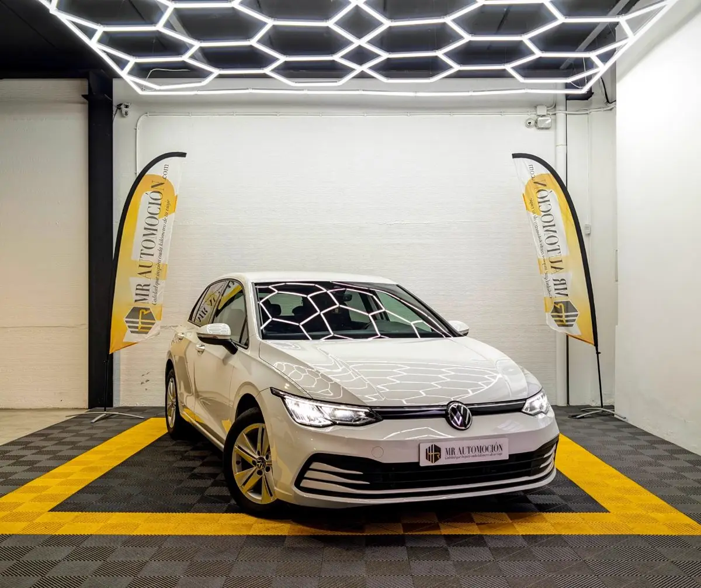

1 / 24La referencia de los compactos, más digital y tecnológico que nunca. Ponemos a la venta este Volkswagen Golf 8 (VIII) acabado Life , matriculado en agosto de 2022 . Se trata de una unidad nacional con tan solo 33.500 km , en un estado de reestreno absoluto y con un equipamiento de seguridad muy superior a la media.
Bajo el capó monta el eficiente motor gasolina 1.0 TSI de 110 CV , asociado a una caja de cambios manual de 6 velocidades. Ofrece un equilibrio perfecto: consumos de utilitario con el aplomo y la tecnología de una berlina superior. Esta unidad destaca por incluir el sistema de Navegación Discover Pro de 10" y asistentes a la conducción de nivel 2.
Esta unidad viene equipada con la última tecnología "Innovision Cockpit" y confort premium: Tecnología y Multimedia Digital Cockpit Pro: Cuadro de instrumentos 100% digital y personalizable. Navegador Discover Media 10": Pantalla táctil grande a color con información 3D y datos vía internet.
App-Connect Inalámbrico: Compatible con Apple CarPlay y Android Auto sin cables. Carga Inalámbrica (Inductiva): Base de carga para smartphone. Puertos USB-C: Carga rápida delantera y trasera. Seguridad y Asistentes (IQ.DRIVE) Control de Crucero Adaptativo (ACC): Mantiene la velocidad y la distancia con el coche de delante automáticamente (frena y acelera solo).
Lane Assist: Asistente de aviso y mantenimiento de carril. Park Pilot: Sensores de aparcamiento delanteros y traseros con frenada de maniobra. Front Assist: Sistema de vigilancia del entorno con frenada de emergencia en ciudad. Faros LED: Con encendido automático, sensor de oscuridad y luz larga asistida.
Detector de fatiga y llamada de emergencia eCall. Confort e Interior Climatizador Trizona "Air Care": Regulación de temperatura independiente para conductor, acompañante y plazas traseras . Asientos Confort con Ajuste Lumbar: Asientos delanteros con regulación de altura y soporte lumbar manual.
Iluminación Ambiental: Luz LED interior configurable en 10 colores. Keyless Start: Arranque sin llave por botón. Espejos Inteligentes: Eléctricos, calefactables y con función parking (el derecho se inclina al dar marcha atrás para ver el bordillo). Apoyabrazos central delantero y trasero. Exterior Llantas de Aleación: Modelo "Norfolk" de 16 pulgadas.
Pintura: Blanco Puro. Iluminación de bienvenida: Proyección de logotipo desde los retrovisores al suelo. ¿Por Qué Este Golf 8 es una Oportunidad? Seguridad: Pocos coches de este segmento incluyen de serie el Control de Crucero Adaptativo (ACC) y el Lane Assist ; viajas con mucha más seguridad.
Estado: Con 33.500 km, el coche mantiene el olor a nuevo. Conectividad: Olvídate de cables gracias a la carga inductiva y el CarPlay inalámbrico. Tu Compra Segura con MR Automoción En MR Automoción te ofrecemos transparencia total con vehículos seminuevos de confianza: ✅ Vehículo Nacional : Matriculado en España (08/2022). ✅ Kilometraje Certificado : 33.518 km reales y garantizados. ✅ Garantía Completa de 1 Año : Tu tranquilidad está asegurada. ✅ Mantenimiento : Se entrega totalmente revisado. ✅ Transferencia incluida en el precio.
| Marca | Volkswagen |
|---|---|
| Modelo | VOLKSWAGEN Golf 8 (VIII) Life 1.0 TSI 2022 |
| Año | Ago 2022 |
| Kilómetros | 33.518 km |
| Combustible | Gasolina |
| Cambio | Manual |
| Potencia | 110 CV |
| Garantía | 1 Año |
| IVA | NO DEDUCIBLE |
Quizá también te encaje